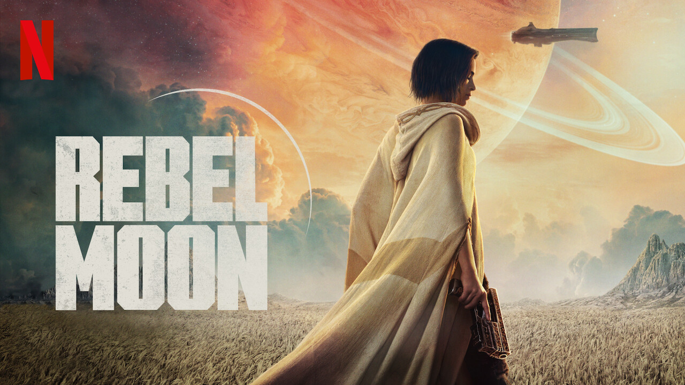

Rebel Moon vs Star Wars
Con motivo del estreno de 'Rebel moon' en Netflix, rescatamos la mejor película de ciencia ficción galáctica de la plataforma de streaming.
fotogramas.es
La sociedad de la nieve
'La sociedad de la nieve' se va de vacío de los Globos de Oro 2024, pero aún hay esperanza de cara a los Oscars para Juan Antonio Bayona

fotogramas.es